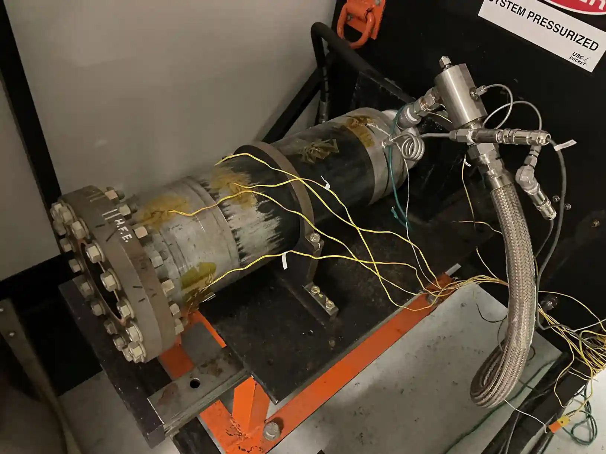

The “Copilot” engine was one of the first subteams I worked on at UBC Rocket. The goal of the engine was to build and test an MDF ablative in a 12 kilonewton rocket.
I was involved in the design of the ignition system and ablative, as well as in a hands-on testing role.
Ablative


I designed and analyzed several 3D printable, weight-optimized mandrels for the alignment of the internal ablative stack. Turns out a solid model and low infill is best.
Igniter System


Multiple versions of the ignition rig were designed, made, and tested.
Additionally, I assembled several of the igniters and designed the camera system for test data collection.
Engine Testing


I assembled and prepared the engine for hotfires, mounting the endplates as well as preparing the MDF ablative for the LOX chill and lead in the static firing procedure.


This included hydrostatic testing, utilizing a hydraulic pump and water to bring the chamber up to proof pressure, as well as cold flow tests to verify the injector's spray inpingment pattern. I also aided in mounting the engine in preparation for the test.




I disassembled and inspected the engine after the static firing. In this case, some cracks were found in the injector plate welds, as well as large amounts of deterioration of the upper ablative plate. These problems were all addressed for the second version of the engine.
This concludes the scope of the work I did on the first Copilot engine.
Looking forward to hotfire #2!